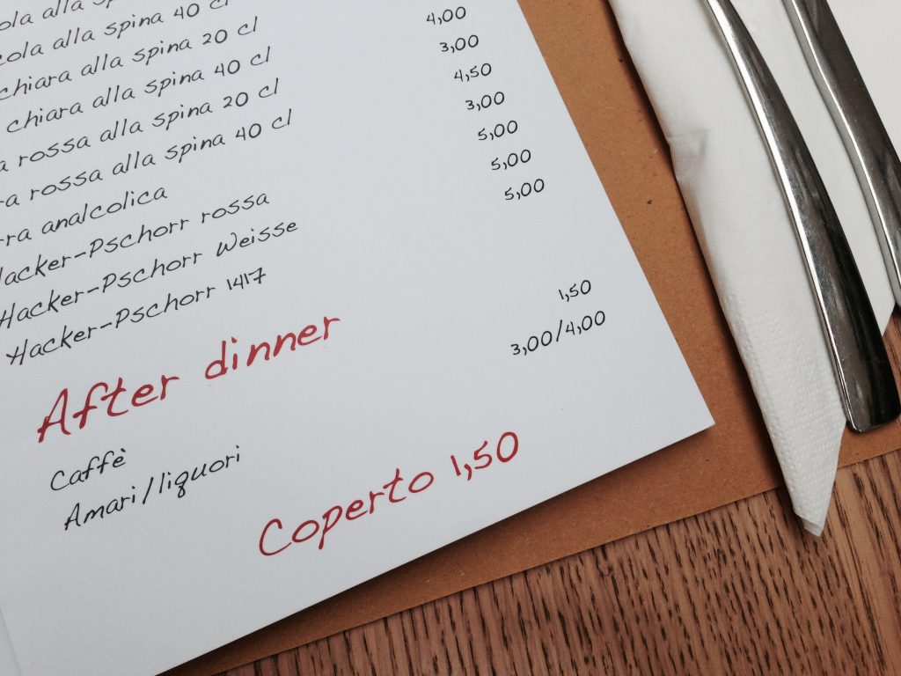

Menu showing the coperto
The majority of the Italian restaurants apply a fixed charge, called coperto. The coperto is applied for the simple reason that you occupy a set table (tavolo), therefore it is meant to cover all the expenses related to it (such as napkins, tablecloths, bread, etc.). The coperto is usually about €2 per person but, eventually, the cost depends on the type of restaurant.
*** DID YOU KNOW? The coperto finds its origins in the inns and taverns of the past, where people stopped for refreshment during a trip or to take a break during a workday. In many cases, customers would bring their own food prepared at home, which is why the innkeeper was charging a small fee for the bread and the seat that was used.*** This is an excerpt from Chapter 3 “Italian cuisine and food establishments” of the eBook “Italy from the Inside. A native Italian reveals the secrets of traveling in Italy”}